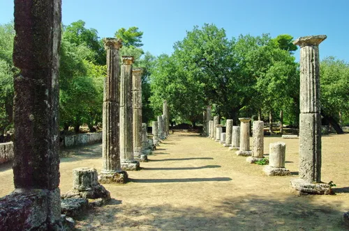

História das Olimpíadas
Um legado milenar de união, competição e superação humana.
A primeira edição dos jogos Olimpicos aconteceram em 776 a.C. em Olímpia, na Grécia antiga, nesse periodo, os jogos eram conhecidos como Jogos Olimpicos da Antiguidade e eram um evento esportivo, religioso e cultural usados em homenagem a Zeus.
Evento cultural e Religioso?
Os Jogos olimpicos eram realizados de quatro em quatro anos e celebravam a paz e união das cidades-estado Gregas e eram uma oportunidade para atletas de toda Grécia se reunirem e competirem em eventos como corrida, luta e lançamento de disco.
Evolução das Olimpíadas
Em 1896, Pierre de Coubertin, inspirado pelo ideal grego, reviveu os Jogos Olímpicos na cidade de Atenas, na Grécia. O evento marcou o início da era moderna das Olimpíadas, que se espalhou pelo mundo, incluindo as Olimpíadas de Verão e de Inverno e então o Comitê Olímpico Internacional (COI) foi fundado e as Olimpíadas modernas foram estabelecidas.

Reimaginação das Olimpíadas na Coreia do Sul
Imagine as Olimpíadas sendo realizadas na Coreia do Sul, com atletas de todo o mundo competindo em eventos como tênis de mesa, futebol e ginástica.
as olimpiadas poderiam acontecer na coreia do sul ja que tal pais tem uma infraestrutura suficiente para tal evento e tem grande renome em todo mundo alem de sua cultura pop percorrer o mundo todo

Atmosfera Eletrizante
A Coreia do Sul tem uma cultura vibrante, rica em tradições milenares, música e gastronomia, que se mescla com a modernidade, criando uma atmosfera única e fascinante.